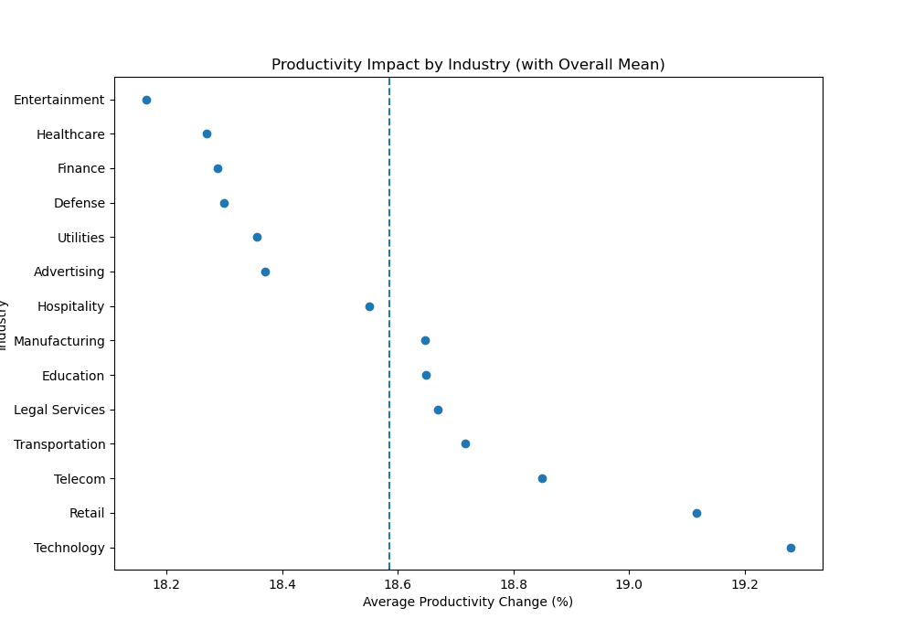
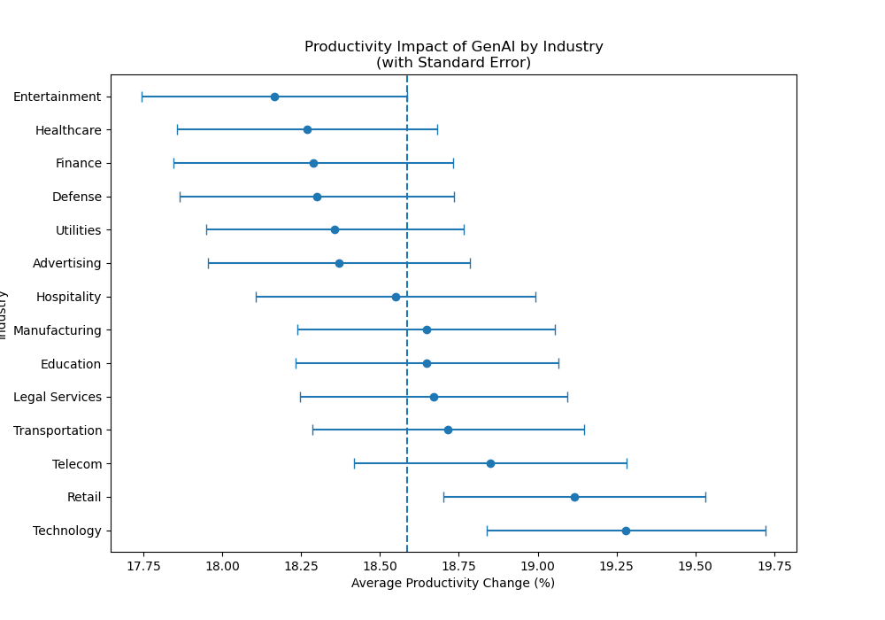

The rapid adoption of generative AI tools across industries has raised pressing questions about the uniformity of their impact. Although tools like ChatGPT, Claude, and Gemini are broadly accessible, the extent to which firms integrate these technologies — and the outcomes they experience — varies significantly by sector. Industries such as Finance and Technology may invest in different tools, commit varying levels of training, and see distinct workforce outcomes compared to sectors like Healthcare. Understanding these differences is essential for business leaders and policymakers seeking to maximize the benefits of GenAI while addressing disparities in productivity and workforce impact. This analysis draws on a filtered subset of over 7,000 US-based enterprise observations spanning 14 industries. Through five visualizations, we examine productivity differences across sectors, workforce outcome distributions, and how company size shapes the return on AI training investment.
Dataset: Enterprise GenAI Adoption and Workforce Impact (Kaggle). Each row represents a single enterprise's self-reported survey response. The original dataset contains 100,000 observations across 10 columns; we filtered to US-based enterprises only, yielding approximately 7,000 rows spanning 14 industries.
Key Columns: Industry, Company Size, GenAI Tool used, Adoption Year, Number of Employees Impacted, New Roles Created, Training Hours Provided, Productivity Change (%), and Employee Sentiment. We engineered three additional features: Years Since Adoption, Training Hours per Employee, and Training ROI. This brings the total to 13 columns with a strong mix of categorical and continuous variables.
Limitations: The dataset is survey-based, so productivity change figures are self-reported and may reflect perceived rather than objectively measured outcomes. The dataset does not distinguish between tool usage intensity (occasional vs. deep integration), and the US-only filter, while intentional, limits generalizability. Some industries have slightly unequal sample sizes, which may affect cross-sector comparisons.

